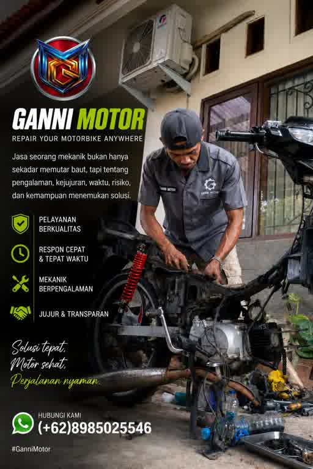

Servis Motor Panggilan
Perawatan dan pemeriksaan motor sesuai kebutuhan, tanpa harus membawa motor ke bengkel jika pekerjaan memungkinkan dilakukan di lokasi.
Konsultasi servis →Tidak sempat ke bengkel? Ganni Motor membantu servis motor panggilan ke rumah, kantor, apartemen, atau lokasi motor mogok di Jakarta, Bekasi, dan area layanan sekitarnya.
Praktis dan transparan. Ketersediaan mekanik, estimasi kedatangan, dan biaya dikonfirmasi terlebih dahulu melalui WhatsApp.

Ceritakan keluhan motor Anda. Kami akan membantu mengarahkan pemeriksaan dan memastikan jenis layanan yang tersedia.
Perawatan dan pemeriksaan motor sesuai kebutuhan, tanpa harus membawa motor ke bengkel jika pekerjaan memungkinkan dilakukan di lokasi.
Konsultasi servis →Pemeriksaan keluhan kelistrikan, starter, pengisian aki, lampu, dan gangguan lain sesuai hasil pemeriksaan mekanik.
Tanya masalah kelistrikan →Pemeriksaan sistem injeksi dan komponen terkait berdasarkan gejala motor, termasuk konsultasi throttle body dan injektor.
Konsultasi servis injeksi →Pemeriksaan area CVT motor matic untuk membantu menangani keluhan suara, getaran, atau performa yang menurun.
Konsultasi servis CVT →Motor mogok di jalan atau sulit dinyalakan? Kirim lokasi, jenis motor, dan gejala agar kami dapat memeriksa ketersediaan bantuan.
Minta bantuan mekanik →Belum tahu penyebab motor bermasalah? Jelaskan gejala dan tipe motor Anda untuk mendapatkan arahan awal.
Konsultasi sekarang →Tiga langkah sederhana untuk memulai konsultasi servis motor.
Beri tahu jenis motor, keluhan yang terjadi, dan lokasi Anda. Sertakan foto atau video jika diperlukan.
Kami membantu memeriksa jangkauan, ketersediaan mekanik, estimasi kedatangan, dan perkiraan biaya.
Setelah disepakati, mekanik menuju lokasi sesuai konfirmasi. Pekerjaan dilakukan berdasarkan hasil pemeriksaan.
Waktu Anda berharga. Layanan panggilan membantu Anda memulai konsultasi tanpa harus langsung antre di bengkel.
Kami melayani permintaan servis motor panggilan sesuai jangkauan dan ketersediaan mekanik. Hubungi kami untuk memastikan apakah lokasi Anda dapat dijangkau.
Wilayah di atas merupakan area layanan yang dituju, bukan jaminan bahwa mekanik selalu tersedia di setiap titik. Konfirmasi lokasi dan biaya kunjungan melalui WhatsApp.
Informasi singkat sebelum Anda memesan layanan Ganni Motor.
Ganni Motor adalah layanan servis motor panggilan untuk membantu pelanggan di Jakarta, Bekasi, dan area sekitarnya sesuai jangkauan layanan.
Ya, Anda dapat meminta mekanik datang ke rumah, kantor, apartemen, atau lokasi motor mogok. Ketersediaan mekanik dan estimasi kedatangan perlu dikonfirmasi melalui WhatsApp.
Layanan meliputi servis motor, pemeriksaan kelistrikan, servis injeksi, servis CVT motor matic, dan penanganan masalah motor sesuai hasil pemeriksaan mekanik.
Tidak. Ganni Motor tidak menyediakan layanan tambal ban. Silakan hubungi kami untuk memastikan ketersediaan layanan perbaikan motor lainnya.
Biaya bergantung pada jenis kerusakan, pekerjaan, suku cadang, dan lokasi. Hubungi kami untuk konsultasi dan konfirmasi biaya sebelum pengerjaan.
Jam operasional yang dicantumkan adalah pukul 06.00–23.00 setiap hari. Silakan hubungi WhatsApp untuk memastikan ketersediaan mekanik pada waktu yang Anda inginkan.
Anda dapat menghubungi kami untuk motor Honda, Yamaha, Suzuki, Kawasaki, Vespa, Kymco, dan Viar roda tiga. Jenis pekerjaan yang dapat ditangani dikonfirmasi berdasarkan model dan keluhan motor.
Ceritakan masalah motor Anda melalui WhatsApp. Sertakan tipe motor, keluhan, dan lokasi agar kami bisa membantu memeriksa kebutuhan layanan Anda.